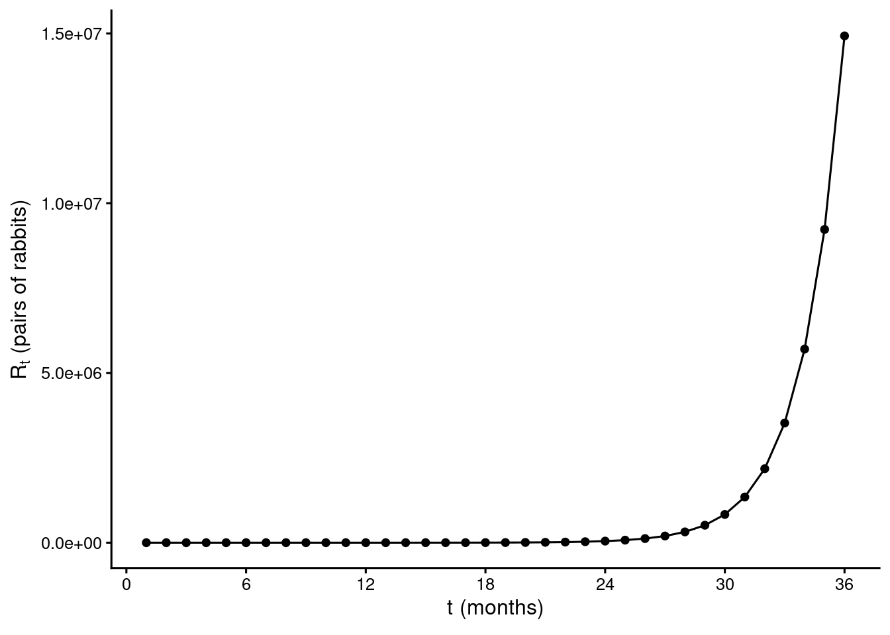
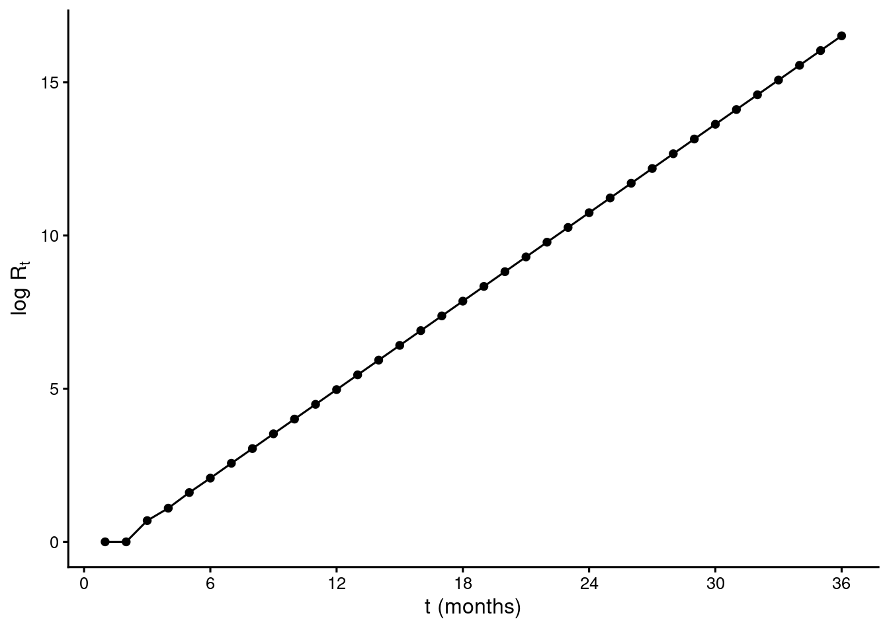
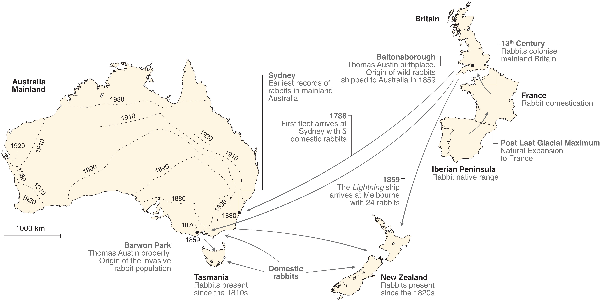
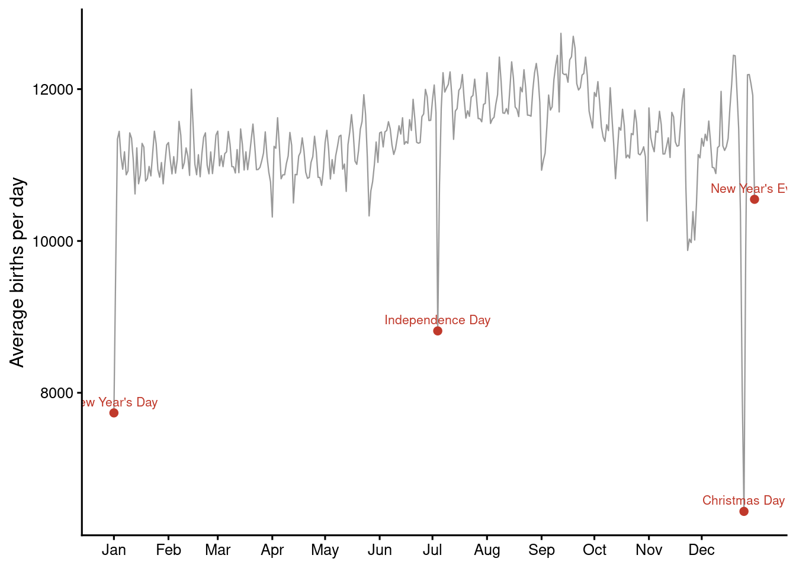
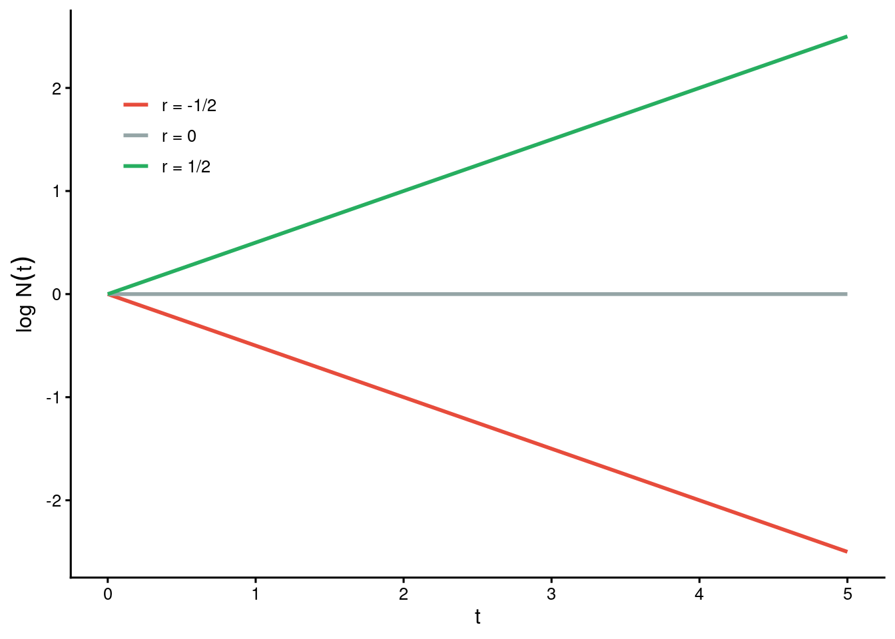
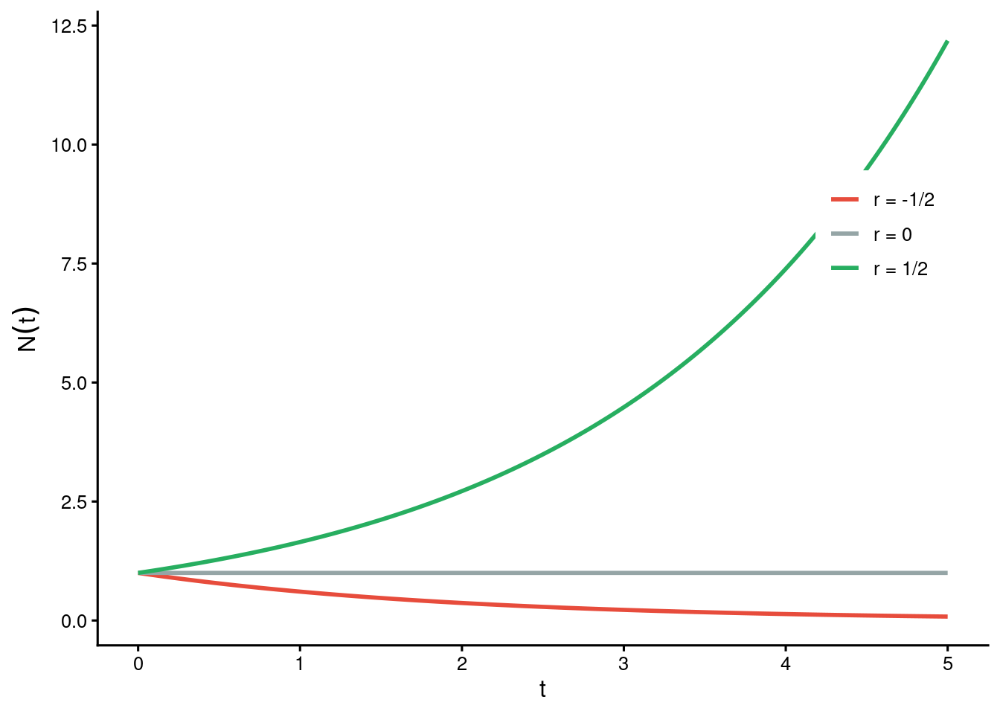
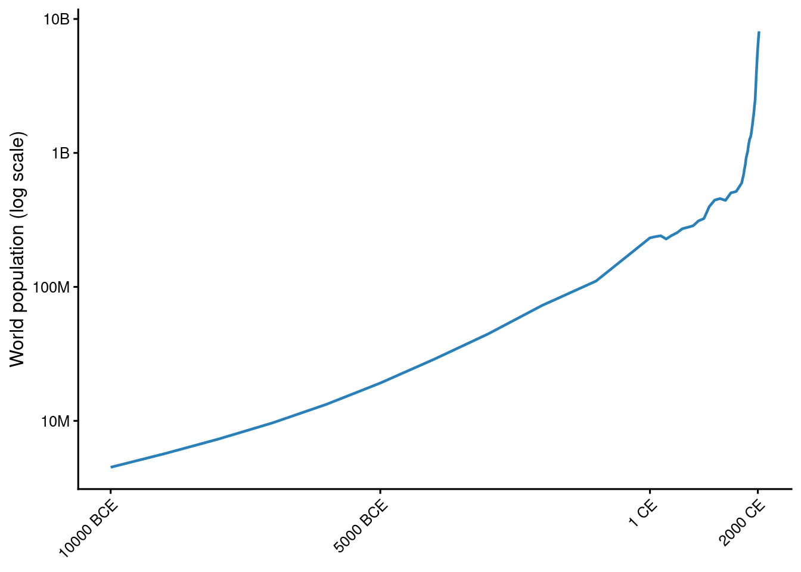
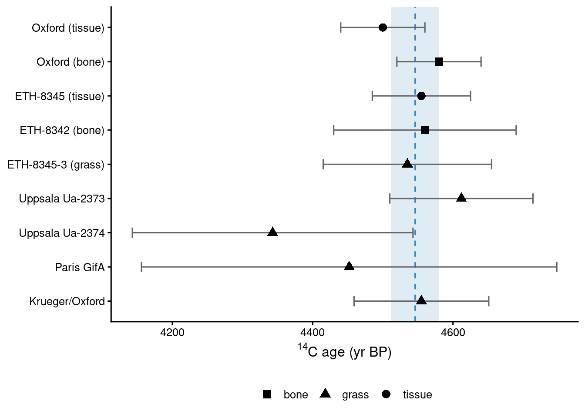

2 Unbounded growth
2.1 Overview
2.2 Historical models: geometric growth
Maybe the first example showing how growth can rapidly lead to large populations can be found in the Liber abaci (1202) by Leonardo Da Pisa, known as Fibonacci.
A certain man had one pair of rabbits together in a certain enclosed place, and one wishes to know how many are created from the pair in one year when it is the nature of them in a single month to bear another pair, and in the second month those born to bear also.
What is a bit unclear from the description: each pair of rabbits matures in one month, and once mature it produces a new pair of immature rabbits per month. Moreover, rabbits do not die! Then, calling \(R_t\) the number of rabbits at month \(t\) we obtain the famous Fibonacci’s sequence:
\[ 1, 1, 2, 3, 5, 8, 13, \ldots \]
By defining \(R_1 = 1\) and \(R_2 = 1\), we can write this implicitly as:
\[ R_t = R_{t-1} + R_{t - 2} \quad t \geq 3 \]
or solve the recursion to obtain:
\[ R_t = \dfrac{\phi^n - \psi^n}{\sqrt{5}} \]
where we have defined the golden ratio \(\phi = \frac{1}{2}(1 + \sqrt{5})\) and its conjugate \(\psi = \frac{1}{2}(1 - \sqrt{5})\). Thus, after one year (12 months) we will have 144 rabbits, and after 3 years \(R_{36} = 14,930,352\). Let’s plot the growth of the population in time
Because the numbers grow so rapidly, it is convenient to plot \(\log R_t\) vs \(t\)

You can see that after some jiggling, the curve in the logarithmic scale approaches a line; this is because, for \(n \gg 1\) we have
\[ R_t \approx \phi R_{t-1} \]
and thus the number of rabbits will grow of approximately 62% per month. Soon, rabbits would take over the world!
Rabbits in Australia
On Christmas day 1859, Thomas Austin released 24 breeding rabbits (Oryctolagus cuniculus) on his estate as game for shooting parties. The rabbits soon expanded across the continent, growing to concerning numbers and with devastating impacts on both agriculture and wildlife.

Estimates vary widely (quantitative ecology was born in the late 1920s, and statistical ecology even later), but by 1910 there were about 1 billion rabbits roaming the continent. A recent genetic analysis (Alves et al. (2022)) has shown that they all descended from the original rabbits from Thomas Austin!
In 1748, Leonard Euler published Introductio in analysin infinitorum, and included the following example:
If we assume that the human race was re-established by six individuals after the Flood—let us say, over a period of two hundred years—and that the population grew to one million, the question arises as to the rate at which the number of people must have increased annually.
He started from the equation:
\[ P_{t+1} = (1 + x) P_t \]
with \(x\) the annual increase of the population. Iterating:
\[ \begin{aligned} P_1 &= (1 + x) P_0\\ P_2 &= (1 + x) P_1 = (1 + x) (1+x) P_0 = (1+x)^2 P_0\\ P_3 &= (1 + x) P_2 = (1+x)^3 P_0\\ \ldots & \ldots\\ P_n &= (1 + x) P_{n-1} = (1+x)^n P_0\\ \end{aligned} \]
Then one needs to solve (note—we write \(\log\) as the natural logarithm):
\[ \begin{aligned} P_{200} &= (1+x)^{200}P_0\\ 10^6 &= (1 + x)^{200} 6\\ \frac{10^6}{6} &= (1+x)^{200}\\ \log \frac{10^6}{6} &= 200 \log(1+x)\\ 12.02 &\approx 200 \log(1+x)\\ 0.06 &\approx \log(1+x)\\ 1.062 &\approx 1+x\\ x &\approx 0.062 \end{aligned} \]
He found the number reasonable, but mused:
But if, by the same rate of increase, the human population had grown over a period of 400 years, it would have risen to a number—16,666,666,666—which the entire earth would have been wholly inadequate to sustain.
We will return to this thought in the next chapter.
Geometric growth
These are all cases of geometric growth, in which the population in the next period is given by:
\[ P_{t+1} = (1+x)P_t \]
If \(x > 0\), the population will expand; if \(x<0\) it will contract; if it is exactly \(x=0\) it will remain constant. When the population is expanding, it will expand very rapidly; when it contracts, it will rapidly approach zero.
The explosive nature of growth and decline has important consequences for natural populations, the spread of diseases, and even human society. Thomas Malthus, in the abrasive An Essay on the Principle of Population (Malthus (1798)) wrote that
Population, when unchecked, increases in a geometrical ratio. Subsistence increases only in an arithmetical ratio. A slight acquaintance with numbers will shew the immensity of the first power in comparison of the second.
He concluded that, as a result, population growth naturally outpaces the food supply, inevitably leading to poverty, famine, and population reduction unless checked by moral restraint, disease, war, or starvation. These bleak conclusions attracted praise and harsh critique, making this slim treatise one of the most influential books of the last few centuries.
Among the critics, Marx and Engels were among the most vitriolic. Engels described Malthus’s thesis as (Engels (1844)):
the crudest, most barbarous theory that ever existed, a system of despair which struck down all those beautiful phrases about love thy neighbour and world citizenship
In the realm of biology, the struggle for existence implicit in the competition for scarce resources inspired the founders of evolution and provided a mechanism for natural selection. Darwin wrote in The Origin of Species (Darwin (1859)):
This is the doctrine of Malthus, applied with manifold force to the animal and vegetable kingdoms, for in this case there can be no artificial increase of food, and no prudential restraint from marriage
and in his autobiography:
In October 1838 […] I happened to read for amusement ‘Malthus on Population’ […] it at once struck me that under these circumstances favourable variations would tend to be preserved, and unfavourable ones to be destroyed. The result of this would be the formation of new species.
Similarly, Wallace wrote in his autobiography (Wallace (2016)):
But perhaps the most important book I read was Malthus’s Principles of Population […] It was the first great work I had yet read treating of any of the problems of philosophical biology, and its main principles remained with me as a permanent possession, and twenty years later gave me the long-sought clue to the effective agent in the evolution of organic species
2.3 Exponential growth
The geometric growth model is well suited for populations where reproduction occurs in discrete time steps (such as seasonally breeding plants or animals). However, many populations, including humans and bacteria, reproduce continuously. To account for this, we can extend the discrete model into continuous time.
Suppose a population has an annual per-capita growth rate \(r\). If reproduction occurs not just once a year, but is split into \(k\) discrete reproductive periods per year, the growth rate per interval is \(\frac{r}{k}\). The population size at time \(t\) years becomes:
\[ N_t = N_0 \left(1 + \frac{r}{k}\right)^{kt} \]
Now we need to remember a key result from algebra: as \(k\) increases, the term \(\left(1 + \frac{r}{k}\right)^{k}\) approaches \(e^r\). This is a consequence of the definition of Euler’s number \(e\):
\[ e = \lim_{x \to \infty} \left(1 + \frac{1}{x}\right)^x = 1 + \frac{1}{2} + \frac{1}{3!} + \frac{1}{4!} + \ldots = 2.71828 \ldots \]
Now consider the change of variables:
\[ x = \frac{k}{r} \implies k = rx \]
and therefore
\[ \left(1 + \frac{r}{k}\right)^{k} = \left(1 + \frac{1}{x}\right)^{rx} = \left[\left(1 + \frac{1}{x}\right)^x\right]^r \]
Because \(\lim_{x \to \infty} \left(1 + \frac{1}{x}\right)^x = e\), we have
\[ \lim_{k \to \infty} \left(1 + \frac{r}{k}\right)^{k} = e^r \]
In summary, taking the limit as \(k \to \infty\) transforms the discrete compounding model into the continuous exponential growth equation:
\[ N(t) = N(0) e^{rt} \]
Here, \(N(t)\) denotes population size at any time \(t \ge 0\).
Key Distinction
In discrete growth, population size \(N_t\) is only defined at specific intervals (\(t = 0, 1, 2 \ldots\)). In continuous growth, \(N(t)\) is defined for all \(t \ge 0\).
To find how fast the population is growing at any instant, we take the derivative of \(N(t)\) with respect to time:
\[ \frac{dN(t)}{dt} = \frac{d}{dt} \left[ N(0) e^{rt} \right] \]
Using the exponential derivative rule (\(\frac{d}{dt} e^{rt} = r e^{rt}\)):
\[ \frac{dN(t)}{dt} = r \cdot \underbrace{N(0) e^{rt}}_{N(t)} = r N(t) \]
Biological Meaning
This reveals that the instantaneous growth rate (\(\frac{dN}{dt}\)) is simply the per-capita rate \(r\) multiplied by the current population size \(N(t)\).
The interpretation of \(r\) is the difference between birth and death rates per individual. If \(r > 0\), the population grows; if \(r < 0\), it declines; if \(r = 0\), it remains constant.
If we divide both sides of the equation by \(N(t)\), we compute the per-capita growth rate:
\[ \frac{1}{N(t)} \frac{dN(t)}{dt} = r \]
This shows that the per-capita growth rate is constant, independent of population size. This is a key assumption of the exponential growth model. We say that the growth of the population is independent of its density.
Are births uniformly distributed throughout the year?
The exponential growth model assumes a constant per-capita birth rate. But are births actually spread evenly across the calendar? The figure below shows the average number of births per calendar day in the United States, based on Social Security Administration records for 2000–2014.

Notice the sharp dips on Christmas Day, New Year’s Day, and Independence Day. Why might that be? And what does it imply about the assumption of a constant birth rate in our model?
Consider again the solution
\[ N(t) = N(0) e^{rt} \]
and take the natural logarithm of both sides:
\[ \log N(t) = \log N(0) + rt \]
This means that if we plot \(\log N(t)\) against time \(t\), we should see a straight line with slope \(r\) and intercept \(\log N(0)\). This is a useful property for analyzing population growth data: a semi-log plot reveals the behavior of the model at a glance, because growth (\(r > 0\)) appears as a line with positive slope, decline (\(r < 0\)) as a line with negative slope, and a constant population (\(r = 0\)) as a horizontal line.

On the original (linear) scale, the same three trajectories make the asymmetry between growth and decline vivid: growing populations accelerate away rapidly, while declining ones approach zero gradually.

Human population growth
The world human population at the end of the last Ice Age (~10,000 BCE) stood at roughly 4–5 million people. It took more than ten millennia to reach one billion (around 1800 CE), yet only two more centuries to multiply eightfold. The figure below shows this history on a log scale using estimates compiled by Our World in Data (2024) from HYDE, Gapminder, and UN data.

On the log scale, a constant \(r\) would appear as a straight line. The curve is not straight: \(r\) was low and roughly constant for millennia, then rose sharply after ~1800. What changed? Agricultural revolutions, industrialization, and advances in public health all reduced death rates while birth rates remained high — a transient but enormous surge in \(r\) that Malthus could not have anticipated.
Another notable feature of the exponential growth model is that if we divide both sides of the equation by \(N(0)\), we find that the right-hand side depends only on the product \(rt\), and not the population density.
\[ \dfrac{N(t)}{N(0)} = e^{rt} \]
Now suppose that the population has doubled in size after \(\tau\) years. Then we have:
\[ \dfrac{N(\tau)}{N(0)} = 2 = e^{r\tau} \]
How long does it take for a population to double in size? We can solve for \(\tau\):
\[ \log 2 = r \tau \implies \tau = \frac{\log 2}{r} \]
The value of \(\log 2\) is approximately 0.693, so we can approximate the doubling time as:
\[ \tau \approx \frac{0.693}{r} \approx \frac{70}{100 \, r} \]
This is known as the “rule of 70”: a population with a constant growth rate of 1% will double in size after approximately 70 years, while a population with a constant growth rate of 10% will double in size after approximately 7 years.
Naturally, a population can double in time only if \(r>0\). If \(r<0\), the population will halve in size after \(\tau = \frac{\log 2}{|r|}\) years, instead.
Radiocarbon dating and Ötzi the Iceman
When \(r < 0\), the exponential model describes decay rather than growth. One of the most consequential applications is radiocarbon dating, developed by Willard Libby at the University of Chicago — an achievement recognized with the Nobel Prize in Chemistry in 1960.
All living organisms continuously exchange carbon with the atmosphere, maintaining a fixed ratio of radioactive \(^{14}\)C to stable \(^{12}\)C. Upon death, exchange stops and \(^{14}\)C decays exponentially. Its half-life is \(t_{1/2} = 5730\) years, giving
\[ r = -\frac{\log 2}{5730} \approx -0.000121 \text{ yr}^{-1} \]
By measuring the fraction of \(^{14}\)C remaining in a sample, one can invert the exponential equation and solve for the time elapsed since death.
In September 1991, a mummified man — now known as Ötzi the Iceman — was found in a glacier at the Hauslabjoch on the Austrian–Italian border. Nine independent radiocarbon measurements of bone, tissue, and grass from his clothing were carried out by five laboratories (Prinoth-Fornwagner and Niklaus 1994). The figure shows these measurements together with their weighted average.

The weighted mean of \(4546 \pm 17\) yr BP — years before present, where “present” is conventionally 1950 CE — places Ötzi’s death between approximately 3350 and 3100 BCE, during the Copper Age.
Alves, Joel M, Miguel Carneiro, Jonathan P Day, John J Welch, Janine A Duckworth, Tarnya E Cox, Mike Letnic, Tanja Strive, Nuno Ferrand, and Francis M Jiggins. 2022. “A Single Introduction of Wild Rabbits Triggered the Biological Invasion of Australia.” Proceedings of the National Academy of Sciences 119 (35): e2122734119.
Darwin, CR. 1859. On the Origin of Species. Harvard University Press, Cambridge, Massachusetts.
Engels, Friedrich. 1844. “Outlines of a Critique of Political Economy.” Deutsch-Französische Jahrbücher 1 (1): 7.
Malthus, Thomas Robert. 1798. “Essay on Principle of Population.” Readex Microprint.
Our World in Data. 2024. “Population.” https://ourworldindata.org/grapher/population.
Prinoth-Fornwagner, R., and Th.R. Niklaus. 1994. “The Man in the Ice: Results from Radiocarbon Dating.” Nuclear Instruments and Methods in Physics Research B 92: 282–90.
Wallace, Alfred Russel. 2016. My Life a Record of Events and Opinions. Read Books Ltd.